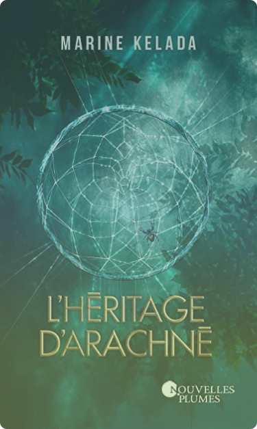
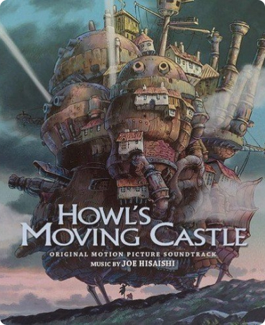
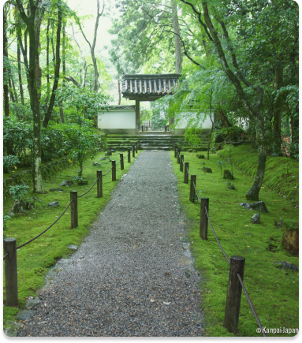
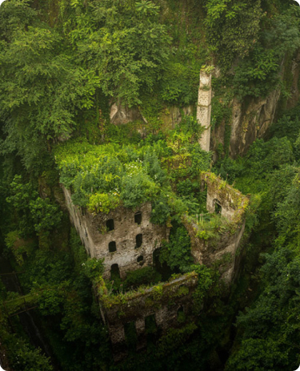

Un livre qui m'a fait du bien
Présenter un livre ? En quoi cela nous aide dans
notre devellopement personnel ? Lit-on de
maniere machinale, je ne pense pas, on lit car le
livre nous intéresse, on y porte un intérêt
particulier, on y prend du plaisir cela nous fait du
bien et nous détend.
L'héritage d'Arachné

Un film qui m'émeut
Les enfants loups, c’est un film qui a été réalisé
par Mamoru Hosada en 2012, il s’agit d’un film d’animation
japonaise qui parle de famille et des difficultés à
s’intégré quand l’on est différent. C’est un film qui
à mon sens est triste et qui porte une très belle morale
en tous cas ce que j’en retient c’est
qu’il faut accepter les différences que ce soit les nôtres
et celle des autres.
Les enfants loup

Une musqiue imporante qui me fait pleurer
A mon sens, c’est important de vous parler de musique car
on le sait bien la musique fait partie intégrante de notre vie.
Il existe diffèrent genres musicaux que ce soit de la pop,
de l’électro ou encore les musiques de film, bien sûr
je ne vais pas tous les présenté car ils sont nombreux et variés.
Merry go round
Un regret à améliorer
Les regrets, on en a tous, ils peuvent être personnelle
ou sinon cela peut être des regrets sur la société,
l’environnement dans lequel on vit.
Les jugements et les préavis

Un lieu à visiter
Un jour dans ma vie future j’aimerais aller dans les pays asiatiques
tels que la Corée, le Vietnam ou encore le Japon,
faire un road trip et me créer des souvenirs. Je pense que c’est
important de se mettre des objectifs dans la vie afin d’avancer
et même si on commet des erreurs ce n’est pas grave .
Temple de bambou, Kyoto

Une cause à défendre
L’espoir à mon sens c’est comme un objectif de vie,
quelque chose pour lequel on veut se battre et espérer.
Moi je crois en un monde qui à l’avenir souffrira moins,
un monde ou à la nature reprend ses droits.
UN monde vert et plus sain